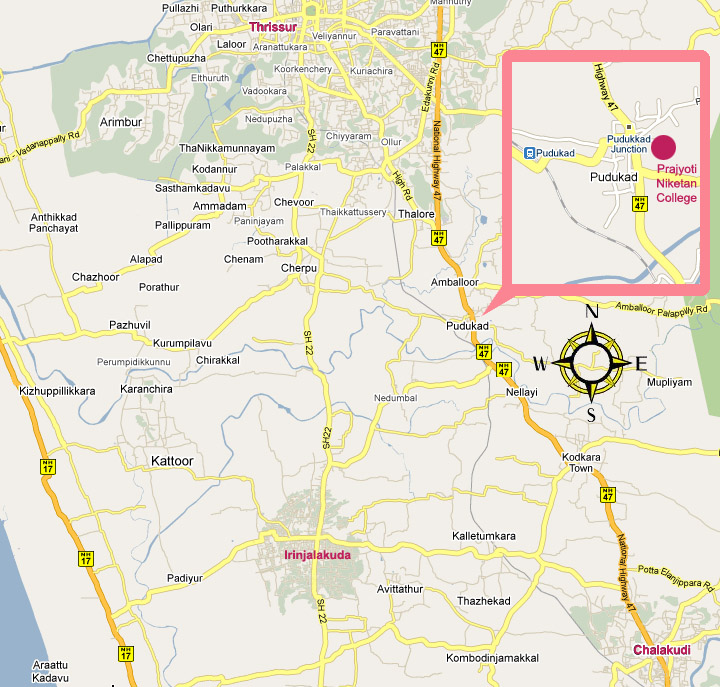

Road Map
Prajyoti Niketan, located in Pratiksaram, is a sprawling 30-acre mount of scenic spread, 300 meters from Pudukad Town along NH 47. The estimated asset is Rs. 25 crores. Pudukad is 14km to the South of Thrissur City and 16km to the North of Chalakudy (Muringure), or 45 km to the North of Nedumbassery (Kochi) International Air-port in Kerala, South India. From the top of Pratiksaram several towns, cities and the Arabian Sea are visible. Set in the pastoral backdrop of coconut groves Prajyoti Niketan is a true haven to afford a healing and heavenly experience. When exposed to nature lectured information becomes wisdom. This verdant scenes open up to our students new visions and vistas. With friendly multinational student body it provides an ideal ambience for intellectual pursuits.
